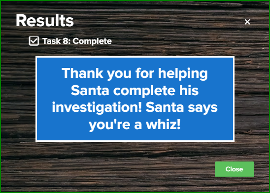

Objective 9) Splunk!
Difficulty:
Help Angel Candysalt solve the Splunk challenge in Santa's great hall. Fitzy Shortstack is in Santa's lobby, and he knows a few things about Splunk. What does Santa call you when when you complete the analysis?
Hints and Resources
Hints provided after helping Fitzy Shortstack and completing the Yara Analysis Terminal Challenge
GitHub Monitoring in Splunk
Between GitHub audit log and webhook event recording, you can monitor all activity in a repository, including common git commands such as git add, git status, and git commit.
Sysmon Monitoring in Splunk
Sysmon network events don't reveal the process parent ID for example. Fortunately, we can pivot with a query to investigate process creation events once you get a process ID.
Malicious NetCat??
Did you know there are multiple versions of the Netcat command that can be used maliciously? nc.openbsd, for example.
Elf Introduction
Talk to Angel Candysalt in the Great Room
Greetings North Pole visitor! I'm Angel Candysalt!
A euphemism? No, that's my name. Why do people ask me that?
Anywho, I'm back at Santa’s Splunk terminal again this year.
There's always more to learn!
Take a look and see what you can find this year.
With who-knows-what going on next door, it never hurts to have sharp SIEM skills!
Solution
Click on the Splunk terminal in the great room or use the direct link https://hhc21.bossworkshops.io/en-US/account/insecurelogin?username=user&password=kringlecon.
For this challenge there are 8 tasks to be completed by executing Splunk searches and analyzing the results. For each task the included table will contain the question, Splunk searches, an analysis of the results, and the final answer.
Task 1
| Question | Capture the commands Eddie ran most often, starting with git. Looking only at his process launches as reported by Sysmon, record the most common git-related CommandLine that Eddie seemed to use. |
|---|---|
| Query | index=main sourcetype=journald source=Journald:Microsoft-Windows-Sysmon/Operational CommandLine="*git*" |
| Analysis | 77 results, 52 Commands Select the CommandLine field on the left bring up a window with the top 10 values and see which one has the highest count |
| Answer | git status |
Task 2
| Question | Looking through the git commands Eddie ran, determine the remote repository that he configured as the origin for the 'partnerapi' repo. The correct one! |
|---|---|
| Query | index=main sourcetype=journald source=Journald:Microsoft-Windows-Sysmon/Operational CommandLine="*git*" CommandLine="*partnerapi*" |
| Analysis | 7 results Look at the process or CommandLine fields for each of the results and we find that Eddie issued the 'git remote add origin' command twice, once using the https URL https://github.com, and another using the ssh URL git@github.com. We see in later commands that he is using the ssh URL, so the ssh option is the correct one. |
| Answer | git@github.com:elfnp3/partnerapi.git |
Task 3
| Question | The 'partnerapi' project that Eddie worked on uses Docker. Gather the full docker command line that Eddie used to start the 'partnerapi' project on his workstation. |
|---|---|
| Query | index=main sourcetype=journald source=Journald:Microsoft-Windows-Sysmon/Operational CommandLine="*docker*" process_name="*docker*" |
| Analysis | 36 results Going through the list there are no instances of 'docker run', or 'docker start', but there is one for 'docker compose up' (at 2:08:01.908) with a current directory of /home/eddie/partnerapi. |
| Answer | docker compose up |
Task 4
| Question | Eddie had been testing automated static application security testing (SAST) in GitHub. Vulnerability reports have been coming into Splunk in JSON format via GitHub webhooks. Search all the events in the main index in Splunk and use the sourcetype field to locate these reports. Determine the URL of the vulnerable GitHub repository that the elves cloned for testing and document it here. You will need to search outside of Splunk (try GitHub) for the original name of the repository. |
|---|---|
| Query | index=main sourcetype=github_json |
| Analysis | 27 results Select the repository.full_name field on the left to bring up a window with two repository names, including elfnp3/dvws-node. Searching github for dvws-node brings up a hit for the Damn Vulnerable Web Services repo snoopysecurity/dvws-node. This information can also be found by going to Eddie's repository at https://github.com/elfnp3/dvws-node and finding under the repository name that it was forked from snoopysecurity/dvws-node |
| Answer | https://github.com/snoopysecurity/dvws-node |
Task 5
| Question | Santa asked Eddie to add a JavaScript library from NPM to the 'partnerapi' project. Determine the name of the library and record it here for our workshop documentation. |
|---|---|
| Query | index=main sourcetype=journald source=Journald:Microsoft-Windows-Sysmon/Operational CommandLine="*npm*" |
| Analysis | 24 results Inspecting the results we see that the command executed at 2:16:20.814 is 'node /usr/bin/npm install holiday-utils-js' |
| Answer | holiday-utils-js |
Task 6
| Question | Another elf started gathering a baseline of the network activity that Eddie generated. Start with their search and capture the full process_name field of anything that looks suspicious. |
|---|---|
| Query | index=main sourcetype=journald source=Journald:Microsoft-Windows-Sysmon/Operational EventCode=3 user=eddie NOT dest_ip IN (127.0.0.*) NOT dest_port IN (22,53,80,443) | stats count by dest_ip dest_port Note that this query is unchanged from the one referenced in the question |
| Analysis | This query results in a 'Smart Mode' Statistics view of 2 IP addresses. Switch the view from Smart Mode to Verbose Mode by selecting the drop down under the magnifying glass in the top right, then change the view from Statistics to Events. We now find that one of the process names is /usr/bin/nc.openbsd, which is referenced in one of the hints as having possibly malicious uses |
| Answer | /usr/bin/nc.openbsd |
Task 7
| Question | Uh oh. This documentation exercise just turned into an investigation. Starting with the process identified in the previous task, look for additional suspicious commands launched by the same parent process. One thing to know about these Sysmon events is that Network connection events don't indicate the parent process ID, but Process creation events do! Determine the number of files that were accessed by a related process and record it here. |
|---|---|
| Query 1 | index=main sourcetype=journald source=Journald:Microsoft-Windows-Sysmon/Operational EventId=1 process_name="/usr/bin/nc.openbsd" |
| Analysis 1 | 1 result The query for the previous question was looking at Network Connection events (Event Code 3), so we could not get the parent ID that was running nc.openbsd. This query though is looking at Process Creation events (Event Code 1), so we can expand the result and learn that the ParentProcessID is 6788 |
| Query 2 | index=main sourcetype=journald source=Journald:Microsoft-Windows-Sysmon/Operational ParentProcessId=6788 |
| Analysis 2 | 2 results This query is looking at all events where the ParentProcessID is 6788. We not only see this process starting nc.openbsd, but also that it access 6 files with the command 'cat /home/eddie/.aws/credentials /home/eddie/.ssh/authorized_keys /home/eddie/.ssh/config /home/eddie/.ssh/eddie /home/eddie/.ssh/eddie.pub /home/eddie/.ssh/known_hosts' |
| Answer | 6 |
Task 8
| Question | Use Splunk and Sysmon Process creation data to identify the name of the Bash script that accessed sensitive files and (likely) transmitted them to a remote IP address. |
|---|---|
| Query 1 | index=main sourcetype=journald source=Journald:Microsoft-Windows-Sysmon/Operational EventID=1 ProcessId=6788 |
| Analysis 1 | From the previous task we know that process 6788 ran both nc.openbsd and accessed a number of sensitive files. So this query looks at that process which we see is running bash. Looking into it's details we find that it's parent process ID is 6784 |
| Query 2 | index=main sourcetype=journald source=Journald:Microsoft-Windows-Sysmon/Operational EventID=1 ProcessId=6784 |
| Analysis 2 | Process 6784 also runs bash. Again, looking into it's details we find that it's parent process ID is 6783 |
| Query 4 | index=main sourcetype=journald source=Journald:Microsoft-Windows-Sysmon/Operational EventID=1 ProcessId=6783 |
| Analysis 4 | Here we find that process 6783 runs the command '/bin/bash preinstall.sh' |
| Answer | preinstall.sh |
Screenshot

Completion
Answer
whiz
Angel Candysalt
Yay! You did it!